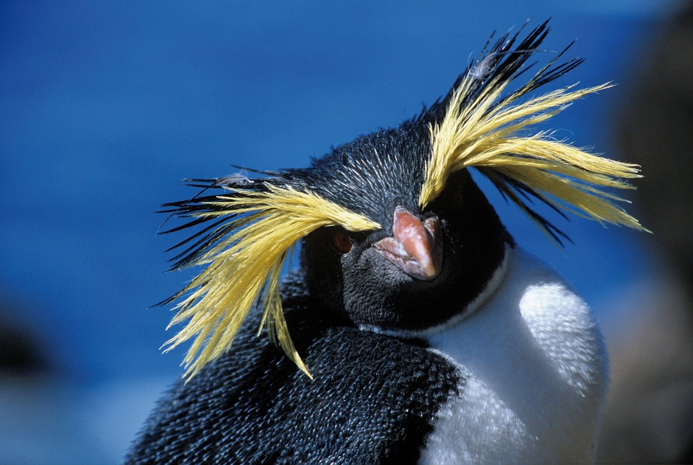
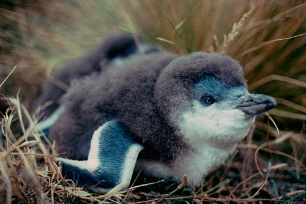
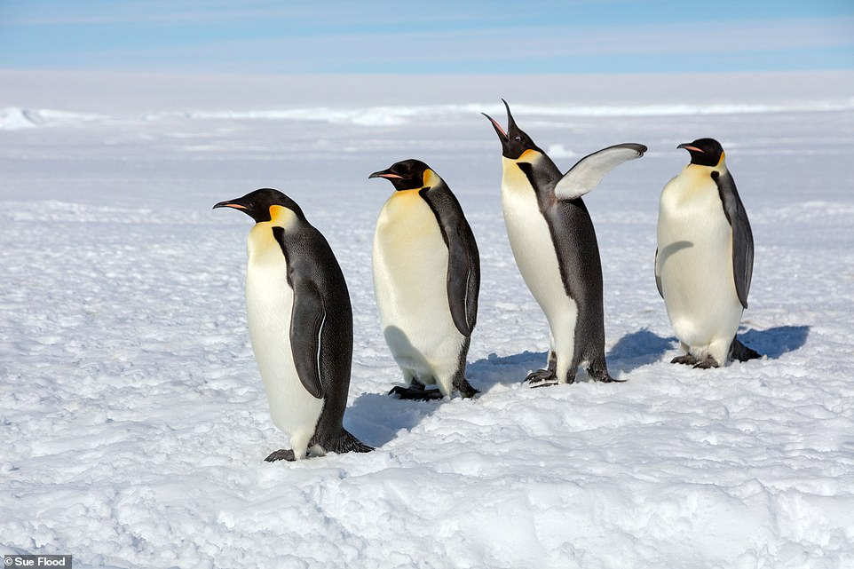
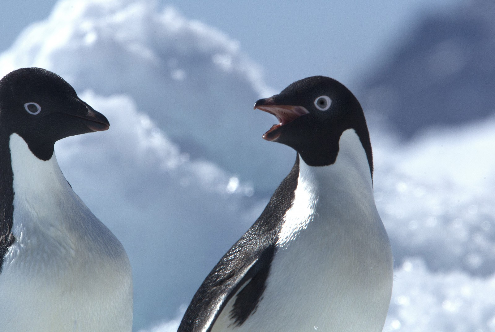
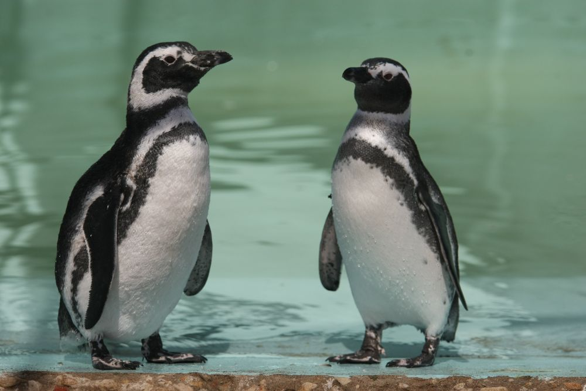

Introducción
Desde que tengo conciencia, siempre me han gustado los animales, en especial los pingüinos, veía documentales sobre ellos y más cosas, a medida que voy creciendo investigo sobre ellos, como cualquier animal, es hermoso y tiene cosas que nos puede sorprender o hacer sentirnos mal, y es normal. Siempre me ha gustado mucho la vida marina que existe, y en este caso hablaré sobre unos datos interesantes sobre esta ave acuática. Y estos son los 5 que más me gustan:
1.Pingüino de Penacho Amarillo

2.Pequeño pingüino azul

3.Pingüino emperador

4.Pingüino adelia

5.Pingüino magallanes
